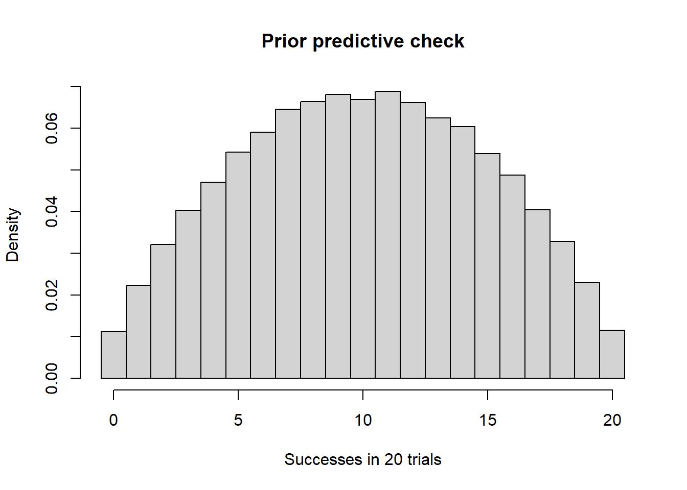

Based on the corresponding unit in the supplied STAT 251 Midterm Exam Topics guide. Numerical examples are illustrative, not additional course data.
Parameters versus future observations
The posterior \(\pi(\theta\mid y_{\rm obs})\) describes an unknown parameter. The posterior predictive distribution describes new data, combining parameter uncertainty with sampling variation. Assume new data are conditionally independent of the observed data given \(\theta\): \[f(y_{\rm new}\mid y_{\rm obs})=\int f(y_{\rm new}\mid\theta)\pi(\theta\mid y_{\rm obs})\,d\theta.\] Use a sum for a discrete parameter. A credible interval for \(\theta\) and a predictive interval for a future count refer to different objects and scales.
Monte Carlo prediction
Draw \(\theta^{(j)}\) from the posterior, then draw \(Y_{\rm new}^{(j)}\) from the sampling distribution conditional on that draw. For a batch of \(m\) future Bernoulli trials, draw one shared parameter per batch and then a binomial count.
set.seed(253)A <-9; B <-5; m <-20; J <-50000theta <-rbeta(J, A, B)y_new <-rbinom(J, size = m, prob = theta)c(mean_count =mean(y_new), prob_at_least_15 =mean(y_new >=15))
mean_count prob_at_least_15
12.86274 0.32890
quantile(y_new, c(0.025, 0.975))
2.5% 97.5%
6 19
# Alternative: average conditional probabilities (less simulation noise).mean(pbinom(14, m, theta, lower.tail =FALSE))
[1] 0.3294873
The integer quantile interval can contain more than 95% probability because discrete counts do not allow arbitrary tail probabilities.
Derive the exact beta-binomial predictive distribution
Suppose \(\theta\mid y\sim\operatorname{Beta}(A,B)\) and \(K\mid\theta\sim\operatorname{Binomial}(m,\theta)\). For \(k=0,\ldots,m\), \[\begin{aligned}
P(K=k\mid y)
&=\int_0^1\binom mk\theta^k(1-\theta)^{m-k}
\frac{\theta^{A-1}(1-\theta)^{B-1}}{B(A,B)}\,d\theta\\
&=\frac{\binom mk}{B(A,B)}\int_0^1\theta^{A+k-1}(1-\theta)^{B+m-k-1}\,d\theta\\
&=\binom mk\frac{B(A+k,B+m-k)}{B(A,B)}.
\end{aligned}\] The probability is zero outside the integer support. This is \(\operatorname{BetaBinomial}(m,A,B)\), with \[E(K\mid y)=m\mu,\qquad
\operatorname{Var}(K\mid y)=m\mu(1-\mu)\frac{A+B+m}{A+B+1},\quad \mu=\frac A{A+B}.\]
Log beta functions and log binomial coefficients avoid direct evaluation of very large factorials or tiny products.
Plug-in prediction and missing uncertainty
A plug-in approach substitutes \(\hat\theta\), often the posterior mean, and uses \(\operatorname{Binomial}(m,\hat\theta)\). With \(\hat\theta=\mu\), its variance is \(m\mu(1-\mu)\), omitting \[m(m-1)\operatorname{Var}(\theta\mid y).\] Indeed, the law of total variance gives \[\operatorname{Var}(K\mid y)=E[m\theta(1-\theta)\mid y]+\operatorname{Var}(m\theta\mid y).\] For \(m>1\) and positive posterior variance the full predictive count distribution is more dispersed. For a single future Bernoulli trial (\(m=1\)), mixing yields Bernoulli probability \(\mu\), so this particular plug-in predictive distribution is exact.
mu <- A/(A+B)c(full_variance = m*mu*(1-mu)*(A+B+m)/(A+B+1),plugin_variance = m*mu*(1-mu))
full_variance plugin_variance
10.408163 4.591837
Future trials are independent conditional on \(\theta\), but positively associated after integrating out their common uncertain parameter.
Prior predictive checks
Before observing these data, \[f(y_{\rm new})=\int f(y_{\rm new}\mid\theta)\pi(\theta)\,d\theta.\] For a \(\operatorname{Beta}(a,b)\) prior and a future binomial count, this is the same beta-binomial formula with \(a,b\) replacing \(A,B\). Simulate plausible data under the sampling design and ask whether their range, extreme values, and frequencies agree with domain knowledge. Revise implausible priors before using the same observations to update them.
set.seed(254)a <-2; b <-2; m <-20prior_theta <-rbeta(50000, a, b)prior_y <-rbinom(length(prior_theta), m, prior_theta)hist(prior_y, breaks =seq(-0.5, m+0.5, by =1), probability =TRUE,main ="Prior predictive check", xlab ="Successes in 20 trials")

c(prob_extreme =mean(prior_y ==0| prior_y == m))
prob_extreme
0.0227
Connection to the marginal likelihood
The marginal likelihood is the prior predictive mass/density evaluated at the observed data. For an observed count \(s\) from \(n\) trials, \[f(s)=\binom ns\frac{B(a+s,b+n-s)}{B(a,b)}.\] For a particular ordered Bernoulli sequence, the binomial coefficient is absent. The sample space must match what was observed. The posterior predictive uses the updated posterior; the marginal likelihood uses the prior. Proper priors are essential for well-defined prior predictive distributions and usual marginal-likelihood comparisons.
Check your understanding
Why should you not draw an independent posterior \(\theta\) for each future trial within one batch? That changes the assumed shared-rate model and removes the within-batch dependence induced by parameter uncertainty.